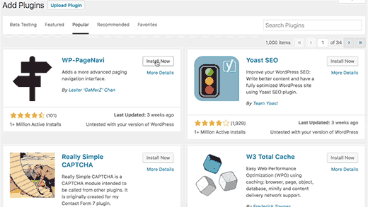
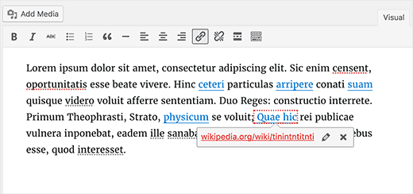
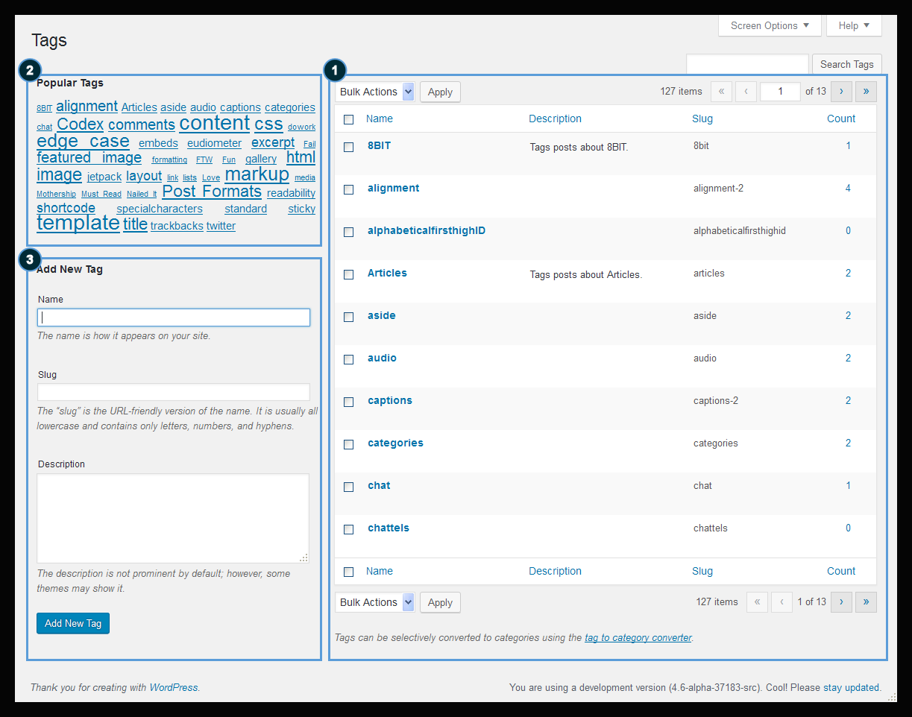
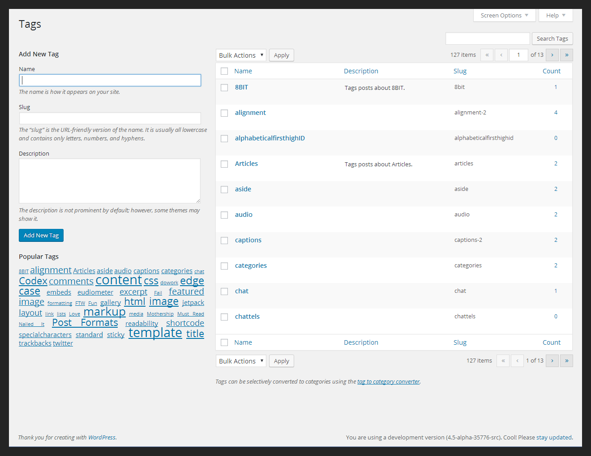
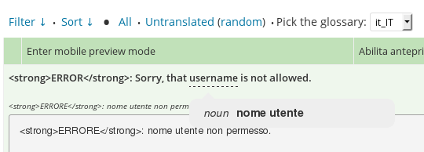

WordPress 4.6
Le novitá
Daniele Scasciafratte / @Mte90Net
Source: make.wordpress.org/core/2016/07/26/wordpress-4-6-field-guide/, www.wpbeginner.com/news/whats-coming-in-wordpress-4-6-features-and-screenshots/
WordPress 4.6 Pepper
272 contributor, 280 bugs, 125 enhancements, 7 feature requests
Daniele Scasciafratte
- Co Founder/CTO Codeat
- Open Source Addicted
- Mozillian & Mozilla Reps
- WordPress Core Contributor/Developer
- Global Plugin Translation Editor in WordPress Italia
- Industria Italiana Software Libero Vice Presidente
Shiny Updates
Native Font
L'area amministriva ora utilizza i font di sistema per diminuire i tempi di caricamento ed elaborazioneBroken Link Alert
Cache per i commenti
I commenti possono essere messi in cache nativamente da WordPressTranslation Just-in-time Loading
Per chi carica le traduzioni su translate.wordpress.org non é piu necessario includere i file di lingua nel pacchettoOld Tag/Category view
New Tag/Category view
Migliorie interne
- WP_Post_Type - $wp_post_types ora é una classe di oggetti
- WP_Term_Query - Query per le tassonomie
- Nuovi API per il Customizer
- Supporto Nativo per WP-CLI
- WP_Site_Query & WP_Network_Query - Per query in ambiente multisite
- Masonry 3.3.2, Backbone.js 1.3.3 e TinyMCE.js 4.4.1
Glot Dict 1.1.4
- 23 lingue supportate
- Download automatico delle nuove versioni del glossario
- Combinazioni di tasti
- Velocizzato il caricamento delle pagine
- Migliorie interne per il parsing dei termini
- Link allo status mondiale delle stringhe
Diventa un PTE
- Caricamento dei file pot
- Filtri potenziati
- Approvazione di stringhe
- PTE Bot
- Aiuti la community
- Aiuti i tuoi clienti
WordPress Italian Translation Day
24-25 Settembre o 1-2 Ottobre
https://public.pad.fsfe.org/p/wproma-tday-2016
o
http://goo.gl/SHxrJE
Siamo su Trello
Wordcamp Rome
Gadget!